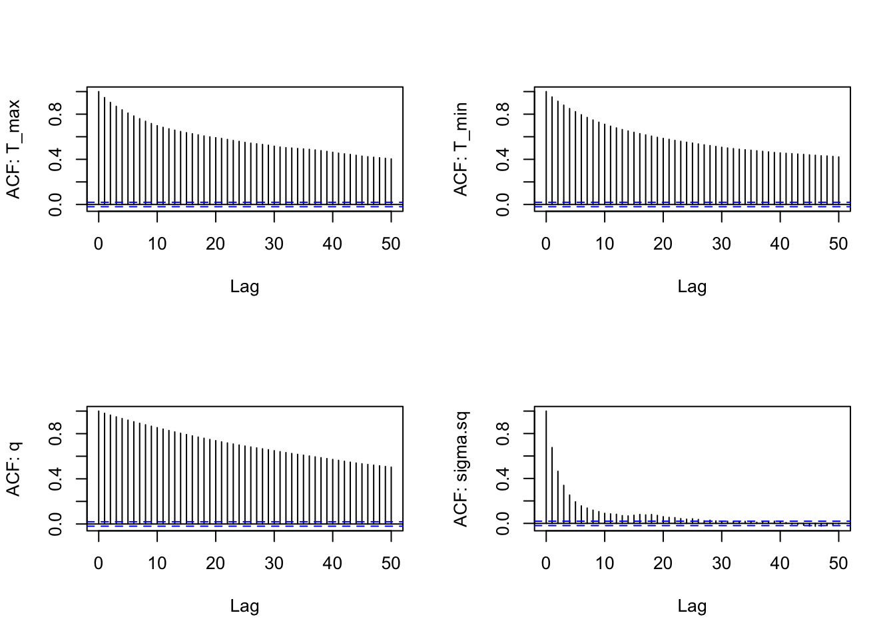
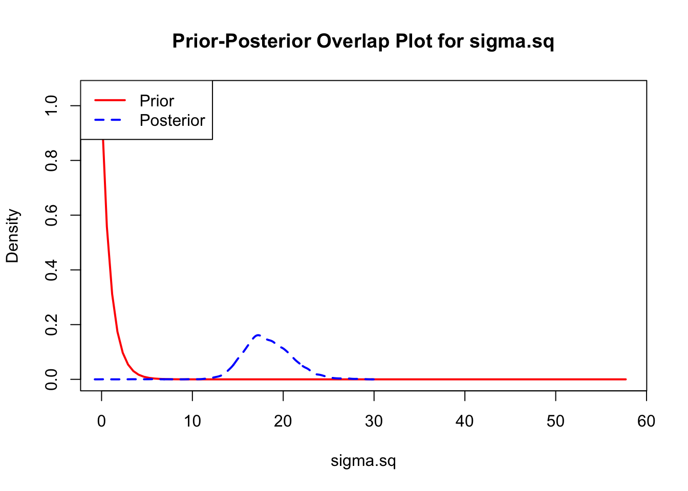
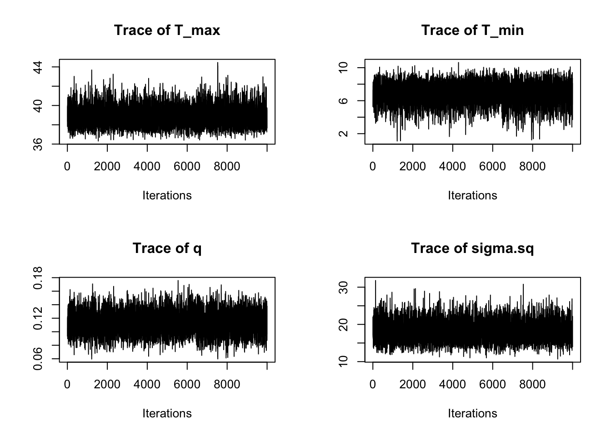
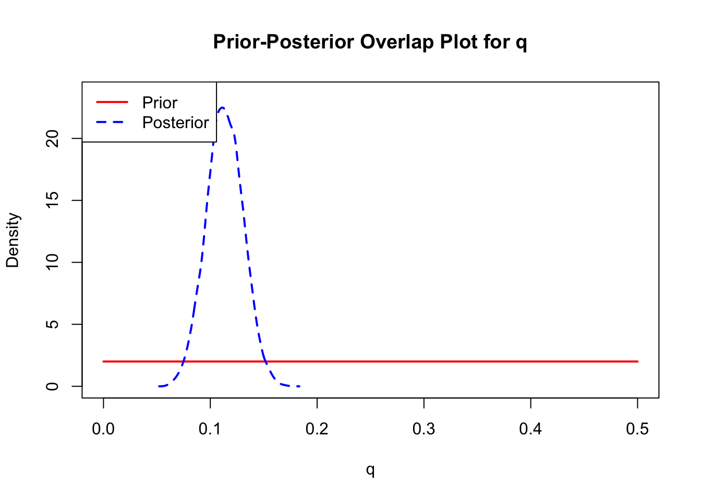
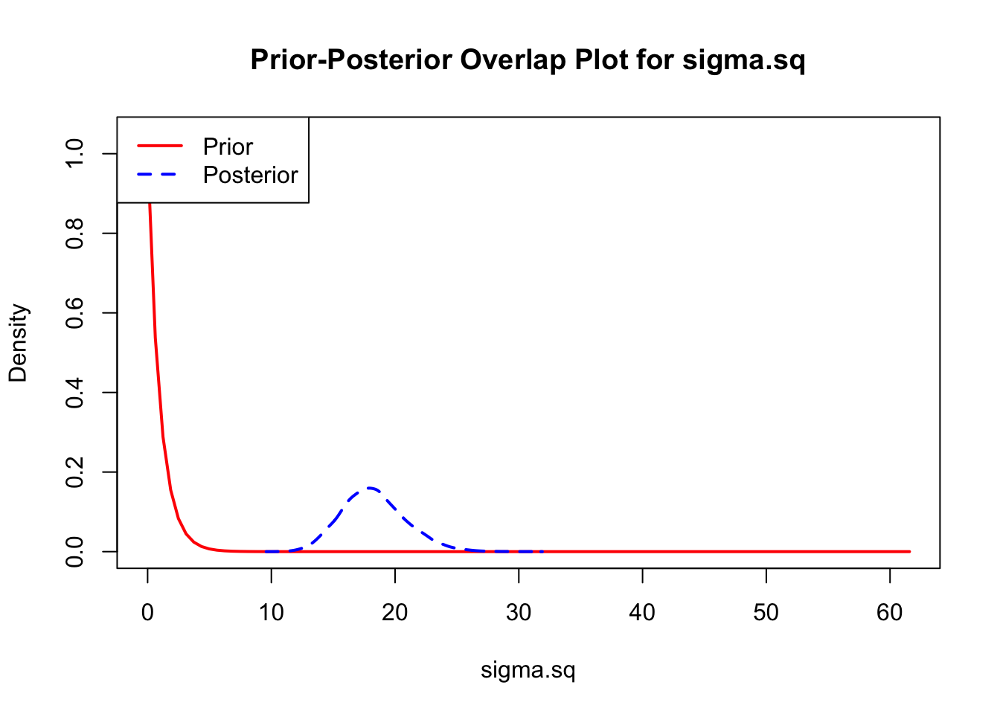
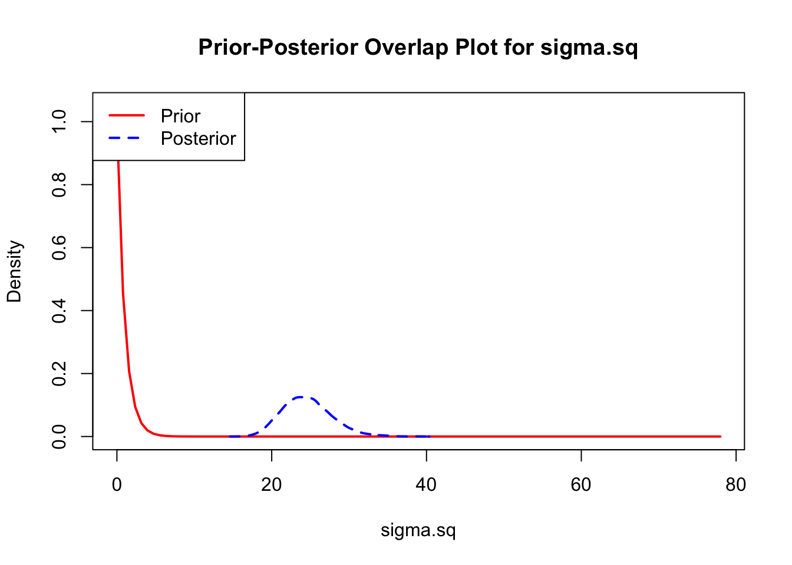
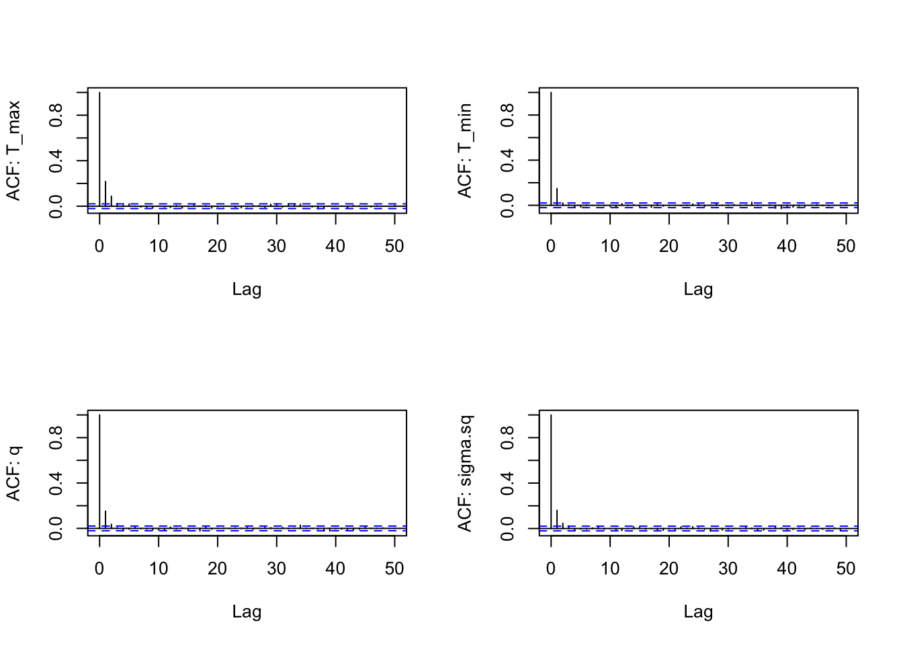
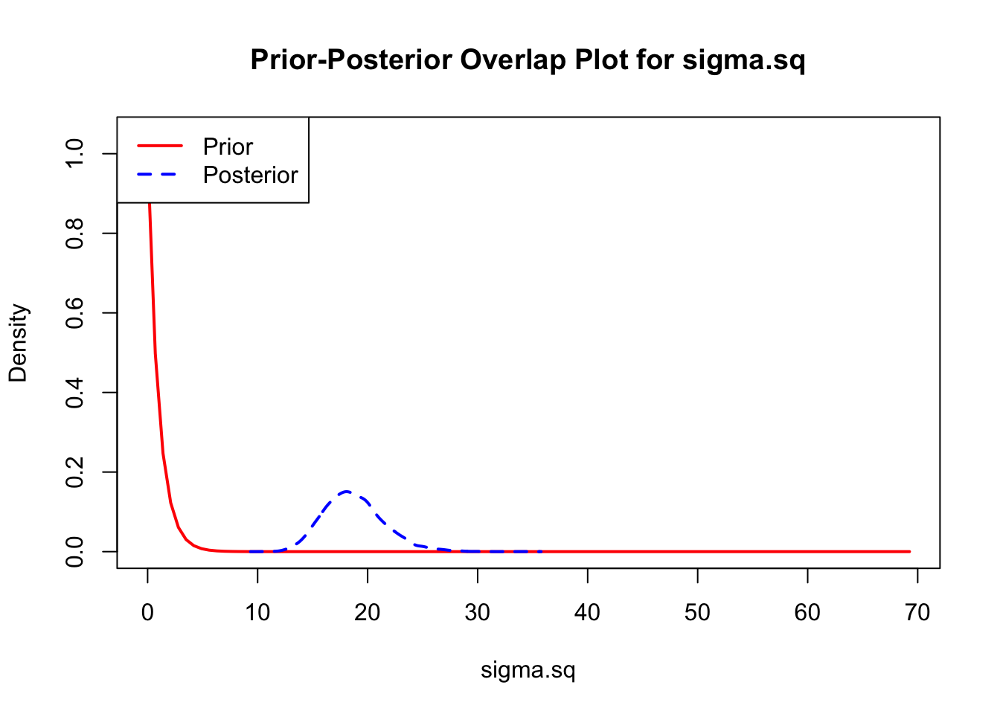
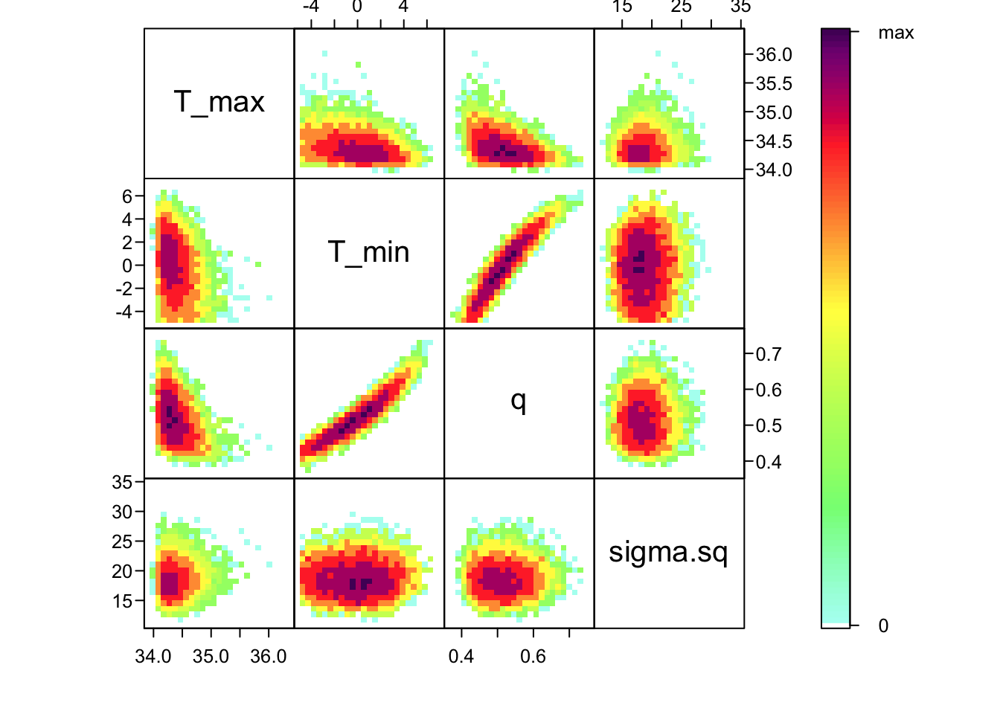

# Load libraries
require(nimble)
require(HDInterval)
library(MCMCvis)
require(coda) # makes diagnostic plots
require(IDPmisc) # makes nice colored pairs plots to look at joint posteriors
require("matrixStats")
require("truncnorm")
##require(mcmcplots) # another option for diagnostic plots, currently unusedIntroduction to Bayesian Methods
Activity 2B: Fitting TPCs using bayesTPC
Introduction
This section is focused on using the bayesTPC package to fit TPCs to data using the methods we’ve explored in the Bayesian lectures and the first two activities. Here we won’t be talking much about the implementation, but instead will rely on the bayesTPC package and it’s functions to allow us to specify, fit, and analyze the data.
Packages and tools
For this practical you will need to first install nimble, then be sure to install the following packages:
We are also introducing our new, in development, package bayesTPC. It is currently available through github.
# install.packages("devtools")
devtools::install_github("johnwilliamsmithjr/bayesTPC")
library(bayesTPC)Aedes data revisited using Bayesian fitting
Now let’s do some Bayesian model fitting to Aedes thermal performance data. We will use the bayesTPC package that implements some of the standard TPC functions (e.g., quadratic, Briere) with truncated normal observation errors, reasonable default priors, and helper functions to make visualizing MCMC output and model predictions simpler.
First, we load the data:
set.seed(1234)
Aaeg.data <- read.csv("AeaegyptiTraitData.csv")The Data
These data are traits from Aedes aegypti mosquitoes measured across temperature in lab experiments. The traits we have data on thermal performance are:
- pEA: proportion surviving from egg to adulthood
- MDR: mosquito development rate
- PDR: parasite development rate (= 1/EIP the extrinsic incubation period)
- \mu (mu): death rate (here = 1/longevity)
Note that some of the traits come in multiple forms (e.g., \mu and 1/\mu, PDR and EIP, if we’re assuming lifespan and development time are exponentially distributed – a common modeling assumption).
As always, first we have a look at the data:
head(Aaeg.data) trait.name Temp trait ref trait2 trait2.name
1 pEA 22 0.90812 Westbrook_Thesis_2010 <NA> <NA>
2 pEA 27 0.93590 Westbrook_Thesis_2010 <NA> <NA>
3 pEA 32 0.81944 Westbrook_Thesis_2010 <NA> <NA>
4 MDR 22 0.09174 Westbrook_Thesis_2010 <NA> <NA>
5 MDR 27 0.13587 Westbrook_Thesis_2010 <NA> <NA>
6 MDR 32 0.15823 Westbrook_Thesis_2010 <NA> <NA>Now let’s pull a subset of the data related to mortality/survival:
mu.data <- subset(Aaeg.data, trait.name == "mu")
lf.data <- subset(Aaeg.data, trait.name == "1/mu")
par(mfrow=c(1,2), bty="l")
plot(trait ~ Temp, data = mu.data, ylab="mu")
plot(trait ~ Temp, data = lf.data, ylab="1/mu")
Note that the \mu data is u-shaped and the lifespan data is hump-shaped.
We could choose to fit this either way. Since thermal performance metrics are often assumed to be unimodal thermal responses, we will fit lifespan instead of \mu as our example. Thus, we’ll need to convert the \mu data to lifespan by taking the inverse. We will combine the data, by assuming that lifespan is 1/\mu (not usually a good idea, but we’re going to do it here so we have more data for the example).
mu.data.inv <- mu.data # make a copy of the mu data
mu.data.inv$trait <- 1/mu.data$trait # take the inverse of the trait values to convert mu to lifespan
lf.data.comb <- rbind(mu.data.inv, lf.data) # combine both lifespan data sets together
par(mfrow=c(1,1), bty="l")
plot(trait ~ Temp, data = lf.data.comb, ylab="1/mu",
ylim=c(0,40))Two thermal performance curve models
Although there are many functional forms that can be used to describe TPCs, we’ll focus on two of the more common (and easy to fit) functions. Traits that respond unimodally but symmetrically to temperature (often the case for compound traits) can be fit with a quadratic function: f_1(T) = \begin{cases} 0 &\text {if } T \leq T_0 \\
-q (T-T_0) (T-T_m) & \text {if } T_0 < T <T_m \\
0 &\text{if } T \geq T_m \end{cases}
Traits that respond unimodally but asymetrically can be fited with a Briere function:
f_2(T) = \begin{cases} 0 &\text {if } T \leq T_0 \\
q T (T-T_0) \sqrt{T_m-T} & \text {if } T_0 < T <T_m \\
0 &\text{if } T \geq T_m \end{cases}
In both models, T_0 is the lower thermal limit, T_m is the upper thermal limit (i.e., where the trait value goes to zero on either end), and q>0 scales the height of the curve, (and so also the value of the trait at the optimum temperature). Note that above we’re assuming that the quadratic must be concave down (hence the negative sign), and that the performance goes to zero outside of the thermal limits.
Fitting with the bayesTPC package
Model and data specification
Unlike the previous Bayesian example, bayesTPC has a number of TPCs already implemented. We can view which TPC models are currently implemented:
get_models() [1] "binomial_glm_lin" "binomial_glm_quad" "briere"
[4] "gaussian" "kamykowski" "pawar_shsch"
[7] "quadratic" "ratkowsky" "stinner"
[10] "weibull" We can view the form of the implemented TPC using the get_formula function:
get_formula("quadratic")expression(-1 * q * (Temp - T_min) * (Temp - T_max) * (T_max >
Temp) * (Temp > T_min))Currently, the likelihood for all TPCs is by default is a normal distribution with a lower truncation at zero, and where the mean of the normal distribution is set to be the TPC (here a quadratic). The last piece of the Bayesian puzzle is the prior. You can see the default parameter names and their default priors using “get_default_priors”:
get_default_priors("quadratic") q T_max T_min
"dunif(0, 1)" "dunif(25, 60)" "dunif(0, 24)" As you can see, for the quadratic function, the default priors are specified via uniform distributions (the two arguments specific the lower and upper bounds, respectively). For the quadratic (and the Briere), the curvature parameter must be positive, and the priors need to be specified to ensure that T_{min}<T_{max}. Note that if you want to set a prior to a normal distribution, unlike in R and most other programs, in nimble (and thus bayesTPC) the inverse of the variance of the normal distribution is used, denoted by \tau = \frac{1}{\sigma^2}.
bayesTPC expects data to be in a named list with the “Trait” as the response and “Temp” as the predictor, that is:
lf.data.bTPC<-list(Trait = lf.data.comb$trait, Temp=lf.data.comb$Temp)The workhorse of the bayesTPC package is the b_TPC function. If you are happy to use the default priors, etc, the usage is simply:
AedTestFit<- b_TPC(data = lf.data.bTPC, model = 'quadratic')Creating NIMBLE model:Defining modelBuilding modelSetting data and initial valuesRunning calculate on model
[Note] Any error reports that follow may simply reflect missing values in model variables.Checking model sizes and dimensions [Note] This model is not fully initialized. This is not an error.
To see which variables are not initialized, use model$initializeInfo().
For more information on model initialization, see help(modelInitialization).Compiling
[Note] This may take a minute.
[Note] Use 'showCompilerOutput = TRUE' to see C++ compilation details.===== Monitors =====
thin = 1: q, sigma.sq, T_max, T_min
===== Samplers =====
RW sampler (4)
- q
- T_max
- T_min
- sigma.sq
Running MCMC:Compiling
[Note] This may take a minute.
[Note] Use 'showCompilerOutput = TRUE' to see C++ compilation details.|-------------|-------------|-------------|-------------|
|-------------------------------------------------------|
We can examine the object that is saved. It includes the data, information on the priors, numbers of samples, and the samples themselves.
names(AedTestFit)[1] "samples" "mcmc" "data" "model_type" "priors"
[6] "constants" "uncomp_model"
We’ll mostly be using the samples:
dim(AedTestFit$samples) # number of samples then number of params[1] 10000 4head(AedTestFit$samples) # show first few sets of samplesMarkov Chain Monte Carlo (MCMC) output:
Start = 1
End = 7
Thinning interval = 1
T_max T_min q sigma.sq
[1,] 44.43478 14.62259 0.1137034 4.819677
[2,] 44.43478 13.73256 0.1137034 4.819677
[3,] 44.43478 13.73256 0.1137034 4.819677
[4,] 43.59761 13.73256 0.1137034 5.195313
[5,] 43.59761 13.73256 0.1137034 5.770068
[6,] 43.58247 12.79661 0.1137034 6.872366
[7,] 42.87303 12.29535 0.1137034 6.872366
Notice that the samples are of type MCMC, which means they’ve been formatted with the coda package (which bayesTPC uses for some of the plotting and diagnostics). Further, by default we take 10000 samples, no burnin, using a random walk sampler.
But we may also want to check what model we fit and the priors that were set:
AedTestFit$model_type[1] "quadratic"AedTestFit$priors q
"dunif(0, 1)"
T_max
"dunif(25, 60)"
T_min
"dunif(0, 24)"
sigma.sq
"T(dt(mu = 0, tau = 1/10, df = 1), 0, )" MCMC diagnostics
We’ll show you a few different ways to examine the output. View the summary of parameters (only the first 5 lines, or it will also show you all of your derived quantities):
summary(AedTestFit$samples)
Iterations = 1:10000
Thinning interval = 1
Number of chains = 1
Sample size per chain = 10000
1. Empirical mean and standard deviation for each variable,
plus standard error of the mean:
Mean SD Naive SE Time-series SE
T_max 39.0788 1.70623 0.0170623 0.16478
T_min 6.9664 2.26052 0.0226052 0.23750
q 0.1152 0.03007 0.0003007 0.00413
sigma.sq 43.5310 14.51913 0.1451913 0.66528
2. Quantiles for each variable:
2.5% 25% 50% 75% 97.5%
T_max 36.25542 37.95629 38.912 39.9542 43.4823
T_min 1.87988 5.66072 7.134 8.3285 11.5630
q 0.06522 0.09488 0.112 0.1305 0.1899
sigma.sq 23.55891 33.88284 40.889 50.0216 78.8200
We can also assess this visually by plotting the chains of the three main TPC parameters and the standard devation of the normal observation model:
par(mfrow=c(2,2))
traceplot(AedTestFit)These all seem to be mixing alright, although we can see that we need to drop a bit of the burn-in.
We can examine the ACF of the chains as well (one for each parameter), similarly to a time series, to again check for autocorrelation within the chain (we want the autocorrelation to be fairly low):
s1<-as.data.frame(AedTestFit$samples)
par(mfrow=c(2,2))
for(i in 1:4) {
acf(s1[,i], lag.max=50, main="",
ylab = paste("ACF: ", names(s1)[i], sep=""))
}
There is still a bit of autocorrelation, especially for the 3 quadratic parameters, but it isn’t too bad. The chain for \sigma is mixing best (the ACF falls off the most quickly). We could reduce the autocorrelation even further by thinning the chain (i.e., change the nt parameter to 5 or 10).
The last important diagnostic is to compare the prior and posterior distributions. Various packages in R have bespoke functions to do this. bayesTPC includes a built in function that creates posterior/prior overlap plots for all model parameters (note that the priors are smoothed because the algorithm uses kernel smoothing instead of the exact distribution).
ppo_plot(AedTestFit)

The prior distribution here is very different from the posterior. These data are highly informative for the parameters of interest and are very unlikely to be influenced much by the prior distribution (although you can always change the priors to check this). However, notice that the posteriors of T_m and T_0 are slightly truncated by their priors.
Visualizing the joint posterior of parameters
Now that we’ve confirmed that things are working well, it’s often useful to also look at the joint distribution of all of your parameters together. Of course, if you have a high dimensional posterior, rendering a 2-D representation can be difficult. Instead, the standard is to examine the pair-wise posterior distribution, for instance as follows:
bayesTPC_ipairs(AedTestFit)As you can see, estimates of T_0 and T_m are highly correlated with q– not surprising given the interplay between them in the quadratic function. This correlation is an important feature of the system, and we use the full posterior distribution that includes this correlation when we want to build the corresponding posterior distribution of the behavior of the quadratic function that we’ve fit.
Modifying the fitting routines
As we noted above, the bTPC function has a set of default specifications for multiple components for every type of implemented TPC. Many of these we can change. For example, above we noted that we can see that we need to drop samples for the burn-in. We might also want to change priors, or use an alternative sampler.
AedQuadFit <- b_TPC(data = lf.data.bTPC, ## data
model = 'quadratic', ## model to fit
niter = 11000, ## total iterations
burn = 1000, ## number of burn in samples
samplerType = 'AF_slice', ## slice sampler
priors = list(q = 'dunif(0, .5)',
sigma.sq = 'dexp(1)') ## priors
) Creating NIMBLE model:Defining modelBuilding modelSetting data and initial valuesRunning calculate on model
[Note] Any error reports that follow may simply reflect missing values in model variables.Checking model sizes and dimensions [Note] This model is not fully initialized. This is not an error.
To see which variables are not initialized, use model$initializeInfo().
For more information on model initialization, see help(modelInitialization).Compiling
[Note] This may take a minute.
[Note] Use 'showCompilerOutput = TRUE' to see C++ compilation details.===== Monitors =====
thin = 1: q, sigma.sq, T_max, T_min
===== Samplers =====
AF_slice sampler (1)
- q, T_max, T_min, sigma.sq
Running MCMC:Compiling
[Note] This may take a minute.
[Note] Use 'showCompilerOutput = TRUE' to see C++ compilation details.|-------------|-------------|-------------|-------------|
|-------------------------------------------------------|
Let’s take a look at the output in this case:
summary(AedQuadFit$samples)
Iterations = 1:10000
Thinning interval = 1
Number of chains = 1
Sample size per chain = 10000
1. Empirical mean and standard deviation for each variable,
plus standard error of the mean:
Mean SD Naive SE Time-series SE
T_max 38.8628 1.03113 0.0103113 0.0173415
T_min 6.9304 1.29244 0.0129244 0.0218539
q 0.1138 0.01714 0.0001714 0.0002824
sigma.sq 18.3480 2.65298 0.0265298 0.0312130
2. Quantiles for each variable:
2.5% 25% 50% 75% 97.5%
T_max 37.1495 38.1422 38.7711 39.4617 41.1361
T_min 4.0666 6.1638 7.0503 7.8229 9.1220
q 0.0807 0.1022 0.1136 0.1254 0.1478
sigma.sq 13.6941 16.5075 18.1267 19.9897 24.0896
We again plot the chains of the three main TPC parameters and the standard deviation of the normal observation model:
## plot(lf.fit.mcmc[,c(1,3,4)]) ## default coda plot
par(mfrow=c(2,2))
traceplot(AedQuadFit)
These all seem to be mixing well, better that the first time, although we can see that we need to drop a bit of the burn-in.
We again look at ACF of the chains as well (one for each parameter):
s1<-as.data.frame(AedQuadFit$samples)
par(mfrow=c(2,2))
for(i in 1:4) acf(s1[,i], lag.max=50, main="", ylab = paste("ACF: ", names(s1)[i], sep=""))Notice this falls off much more quickly – the samples from the slice filter in this case are less autocorrelated than the default random walk (“RW”) filter.
And comparing the new priors to the posteriors:
ppo_plot(AedQuadFit, burn = 1000)

Let’s also fit the Briere function to the data, just to see how it does:
AedBriFit <- b_TPC(data = lf.data.bTPC, ## data
model = 'briere', ## model to fit
niter = 11000, ## total iterations
burn = 1000, ## number of burn in samples
samplerType = 'AF_slice', ## slice sampler
priors = list(T_min = "dunif(5,10)",
T_max = "dunif(18,35)",
sigma.sq = 'dexp(1)') ## priors
) Creating NIMBLE model:Defining modelBuilding modelSetting data and initial valuesRunning calculate on model
[Note] Any error reports that follow may simply reflect missing values in model variables.Checking model sizes and dimensions [Note] This model is not fully initialized. This is not an error.
To see which variables are not initialized, use model$initializeInfo().
For more information on model initialization, see help(modelInitialization).Compiling
[Note] This may take a minute.
[Note] Use 'showCompilerOutput = TRUE' to see C++ compilation details.===== Monitors =====
thin = 1: q, sigma.sq, T_max, T_min
===== Samplers =====
AF_slice sampler (1)
- q, T_max, T_min, sigma.sq
Running MCMC:Compiling
[Note] This may take a minute.
[Note] Use 'showCompilerOutput = TRUE' to see C++ compilation details.|-------------|-------------|-------------|-------------|
|-------------------------------------------------------|summary(AedBriFit$samples)
Iterations = 1:10000
Thinning interval = 1
Number of chains = 1
Sample size per chain = 10000
1. Empirical mean and standard deviation for each variable,
plus standard error of the mean:
Mean SD Naive SE Time-series SE
T_max 34.6785 0.19000 0.0019000 0.0021598
T_min 5.9884 0.71908 0.0071908 0.0099586
q 0.4878 0.02878 0.0002878 0.0003643
sigma.sq 18.0176 2.64058 0.0264058 0.0333677
2. Quantiles for each variable:
2.5% 25% 50% 75% 97.5%
T_max 34.2885 34.5421 34.6896 34.833 34.9801
T_min 5.0396 5.4075 5.8581 6.433 7.6763
q 0.4401 0.4672 0.4849 0.505 0.5528
sigma.sq 13.4731 16.1402 17.7733 19.649 23.8433We again plot the chains of the three main TPC parameters and the standard deviation of the normal observation model:
## plot(lf.fit.mcmc[,c(1,3,4)]) ## default coda plot
par(mfrow=c(2,2))
traceplot(AedBriFit, burn=1000)Overall very good mixing, but we can see our choice of priors wasn’t ideal.
We again look at ACF of the chains as well (one for each parameter):
s2<-as.data.frame(AedBriFit$samples[1000:10000,])
par(mfrow=c(2,2))
for(i in 1:4) {
acf(s2[,i], lag.max=50, main="",
ylab = paste("ACF: ", names(s2)[i], sep=""))
}
This is great! Finally comparing the new priors to the posteriors:
ppo_plot(AedBriFit, burn = 1000)

Now we look at the joint posterior.
bayesTPC_ipairs(AedBriFit, burn=1000)Finally, what if we wanted to fit a model not included in bayesTPC?
Let’s look at how the package defines the Briere model.
get_default_model_specification("briere")bayesTPC Model Specification of Type: briere
Model Formula:
q * (Temp - T_min) * sqrt((T_max > Temp) * abs(T_max - Temp)) * (T_max > Temp) * (Temp > T_min)
Model Parameters and Priors:
q: dunif(0, 1)
T_max: dunif(25, 60)
T_min: dunif(0, 24)
Prior for Variance:
T(dt(mu = 0, tau = 1/10, df = 1), 0, )
For our model, we will choose an alternate Briere formula, changing the square root to a cube root.
f_2(T) = \begin{cases} 0 &\text{if } T \leq T_0 \\ q T (T-T_0) \sqrt[3]{T_m-T} & \text{if } T_0 < T <T_m \\ 0 &\text{if } T \geq T_m \end{cases}
my_briere_formula <- expression(q * (Temp - T_min) * ((T_max > Temp) * abs(T_max - Temp))^(1/3) * (T_max > Temp) * (Temp > T_min))
Now, we choose the priors we want to sample from. We’ll include a little more flexibility here to ensure the model fits how we want it to.
my_briere_priors <- c(
q = "dunif(0,1)",
T_max = "dunif(20,45)",
T_min = "dunif(-5,10)")
Since we have no constants we need to add, that’s all the information we need! We can use specify_normal_model() to create a model object we can train.
my_briere <- specify_normal_model("my_briere", #model name
parameters = my_briere_priors, #names are parameters, values are priors
formula = my_briere_formula
)Using default prior for model variance.
Normal model type 'my_briere' can now be accessed using other bayesTPC functions. Reload the package to reset back to defaults.
Now we can use this model just like any other.
get_formula("my_briere")expression(q * (Temp - T_min) * ((T_max > Temp) * abs(T_max -
Temp))^(1/3) * (T_max > Temp) * (Temp > T_min))get_default_priors("my_briere") q T_max T_min
"dunif(0,1)" "dunif(20,45)" "dunif(-5,10)"
We can also pass the model object in, instead of just the name. configure_model() returns the BUGS model that will be trained.
cat(configure_model(my_briere)){
for (i in 1:N){
Trait[i] ~ T(dnorm(mean = q * (Temp[i] - T_min) * ((T_max > Temp[i]) * abs(T_max - Temp[i]))^(1/3) * (T_max > Temp[i]) * (Temp[i] > T_min), var = sigma.sq), 0, )
}
q ~ dunif(0,1)
T_max ~ dunif(20,45)
T_min ~ dunif(-5,10)
sigma.sq ~ T(dt(mu = 0, tau = 1/10, df = 1), 0, )
}
Now, let’s train our Briere model.
AedMyBriFit <- b_TPC(data = lf.data.bTPC, ## data
model = 'my_briere', ## model to fit
niter = 11000, ## total iterations
burn = 1000, ## number of burn in samples
samplerType = 'AF_slice', ## slice sampler
priors = list(sigma.sq = 'dexp(1)') ## priors
) Creating NIMBLE model:Defining modelBuilding modelSetting data and initial valuesRunning calculate on model
[Note] Any error reports that follow may simply reflect missing values in model variables.Checking model sizes and dimensions [Note] This model is not fully initialized. This is not an error.
To see which variables are not initialized, use model$initializeInfo().
For more information on model initialization, see help(modelInitialization).Compiling
[Note] This may take a minute.
[Note] Use 'showCompilerOutput = TRUE' to see C++ compilation details.===== Monitors =====
thin = 1: q, sigma.sq, T_max, T_min
===== Samplers =====
AF_slice sampler (1)
- q, T_max, T_min, sigma.sq
Running MCMC:Compiling
[Note] This may take a minute.
[Note] Use 'showCompilerOutput = TRUE' to see C++ compilation details.|-------------|-------------|-------------|-------------|
|-------------------------------------------------------|
Finally, we can run the same diagnostics as before.
par(mfrow=c(2,2))
traceplot(AedMyBriFit, burn=1000)Looks like the mixing went well again. How about ACF?
s3<-as.data.frame(AedMyBriFit$samples[1000:10000,])
par(mfrow=c(2,2))
for(i in 1:4) {
acf(s3[,i], lag.max=50, main="",
ylab = paste("ACF: ", names(s3)[i], sep=""))
}
Good! Finally, let’s look at our posterior distributions and see how well we fit the data.
ppo_plot(AedMyBriFit)
bayesTPC_ipairs(AedMyBriFit, burn = 1000)
Model Selection
coda lets us pull the Watanabe–Akaike information criterion (WAIC) from the models we’ve fit. We’re currently working on providing more model selection methods in bayesTPC.
AedTestFit$mcmc$getWAIC() [Warning] There are 5 individual pWAIC values that are greater than 0.4. This may indicate that the WAIC estimate is unstable (Vehtari et al., 2017), at least in cases without grouping of data nodes or multivariate data nodes.nimbleList object of type waicNimbleList
Field "WAIC":
[1] 211.1489
Field "lppd":
[1] -97.26867
Field "pWAIC":
[1] 8.305783AedQuadFit$mcmc$getWAIC() [Warning] There are 6 individual pWAIC values that are greater than 0.4. This may indicate that the WAIC estimate is unstable (Vehtari et al., 2017), at least in cases without grouping of data nodes or multivariate data nodes.nimbleList object of type waicNimbleList
Field "WAIC":
[1] 212.9127
Field "lppd":
[1] -100.5748
Field "pWAIC":
[1] 5.88152AedBriFit$mcmc$getWAIC() [Warning] There are 2 individual pWAIC values that are greater than 0.4. This may indicate that the WAIC estimate is unstable (Vehtari et al., 2017), at least in cases without grouping of data nodes or multivariate data nodes.nimbleList object of type waicNimbleList
Field "WAIC":
[1] 210.3553
Field "lppd":
[1] -100.6152
Field "pWAIC":
[1] 4.562425AedMyBriFit$mcmc$getWAIC() [Warning] There are 5 individual pWAIC values that are greater than 0.4. This may indicate that the WAIC estimate is unstable (Vehtari et al., 2017), at least in cases without grouping of data nodes or multivariate data nodes.nimbleList object of type waicNimbleList
Field "WAIC":
[1] 213.9177
Field "lppd":
[1] -101.5127
Field "pWAIC":
[1] 5.446128
It looks like the default Briere model performed ever so slightly better, but the values are similar enough.
Plot the fits
First extract the fits/predictions using the bayesTPC_summary function and use the tidyverse to save the model predictions as a tibble. We can then use ggplot to generate a pretty plot of our TPC with prediction bounds
library(tidyverse)
briere_fit <- as_tibble(bayesTPC_summary(AedMyBriFit, plot = F))
head(briere_fit)# A tibble: 6 × 4
Temp_interval Upper_bounds Lower_bounds Medians
<dbl> <dbl> <dbl> <dbl>
1 10.6 19.0 12.7 15.9
2 10.6 19.0 12.7 15.9
3 10.6 19.0 12.7 15.9
4 10.7 19.0 12.8 16.0
5 10.7 19.1 12.8 16.0
6 10.7 19.1 12.9 16.0ggplot(briere_fit)+
geom_line(aes(Temp_interval, Medians))+
theme_bw()+
geom_ribbon(aes(Temp_interval, ymin=Lower_bounds, ymax=Upper_bounds), fill="#30694B",alpha=0.5,
inherit.aes = T)+
geom_point(aes(Temp, trait), lf.data.comb, shape=21, fill='#C0C0C0',
col='#000000', alpha=0.8, stroke=0.5, size=2)+
theme(text = element_text(size=12))+
scale_y_continuous(expression(plain(paste("lifespan (days)"))))+
labs(x=expression(plain(paste(" Temperature, ",degree,"C"))))+
theme(legend.position = 'none',
axis.title.y = element_text(size=12), axis.title.x = element_text(size=12),
panel.grid.major = element_blank(),
panel.grid.minor = element_blank())We can also use the built in function, posteriorPredTPC(), to plot the median and lower/upper bounds from samples taken from the posterior distribution.
posteriorPredTPC(AedMyBriFit)Warning in posteriorPredTPC(AedMyBriFit): Currently using summaryType = "hdi".
Default credible interval mass is credMass = .9)
Finally we can plot the fits/predictions. These are the posterior estimates of the fitted lines to the data. Recall that we can take each accepted sample, and plug it into the quadratic equations. This gives us the same number of possible lines as samples. We can then summarize these with the HPD intervals across each temperature. This is especially easy in this case because we’ve already saved these samples as output in our model file:
Additional analyses
Once you have all of these samples, you can do many other things. For example, you can use the which.max() function to find the peak temperature (T_{pk}) for adult lifespan and its value at T_{pk}:
lifespan_Tpk <- briere_fit %>% slice(which.max(Medians))
You can then plot T_{pk} and the trait value at T_{pk}:
ggplot(briere_fit)+
geom_line(aes(Temp_interval, Medians), size=0.4)+
theme_bw()+
geom_ribbon(aes(Temp_interval, ymin=Lower_bounds, ymax=Upper_bounds), fill="#30694B",alpha=0.5,
inherit.aes = T)+
geom_point(aes(Temp, trait), lf.data.comb, shape=21, fill='#C0C0C0',
col='#000000', alpha=0.8, stroke=0.5, size=2)+
geom_point(aes(Temp_interval, Medians), lifespan_Tpk, shape=23, fill='yellow',
col='#000000', alpha=0.8, stroke=0.5, size=3)+
theme(text = element_text(size=12))+
scale_y_continuous(expression(plain(paste("lifespan (days)"))))+
labs(x=expression(plain(paste(" Temperature, ",degree,"C"))))+
theme(legend.position = 'none',
axis.title.y = element_text(size=12), axis.title.x = element_text(size=12),
panel.grid.major = element_blank(),
panel.grid.minor = element_blank())
This suggests that optimal temperature for adult lifespan in Aedes aegypti is 25.8 degrees Celsius! Can you now figure out how to get the credible intervals for T_{pk} and the trait value at T_{pk}?
Other Aedes aegypti traits (Independent Practice)
In addition to lifespan/mortality rate for Aedes aegypti, this file we used also includes PDR/EIP data. You can also download some other trait data from the VectorByte – VecTraits Databases
Write you own analysis as an independent, self-sufficient R script that produces all the plots in a reproducible workflow when sourced. You may need to use a Briere function instead of quadratic.